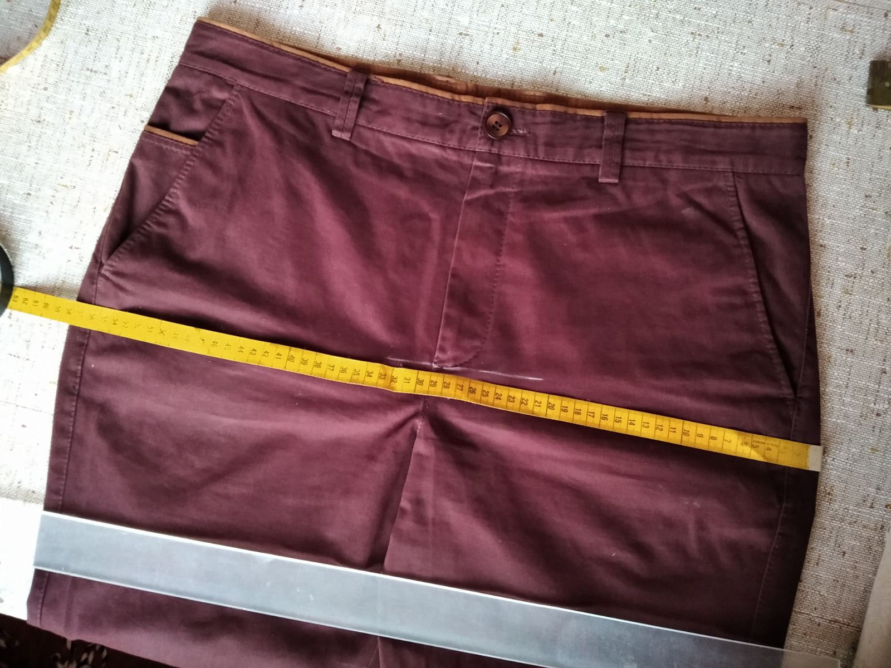

Measure a pair of pants that fits you well - not your body. Use chinos, dress pants, or similar (jeans work too).
Measuring pants is easier and more precise than measuring your body.
Measurements Reference:
We'll guide you through measurements A, C, D, plus Hips, Width at Thigh, and optionally E (leg opening).
Select your preferred unit:
A - Waist
Place the tape right on top of the seam that connects the waistband to the pants you're measuring.
C - Front Rise
This is one of the trickiest measurements. Fold the pants in half (like in the photo). Line up the waistband seam and follow the zipper down until you reach the spot where both pant legs are connected, then measure up to that spot where you have a 90-degree angle.
D - Inseam
The inseam measurement is pretty straightforward - measure from the crotch seam down to the bottom hem of the pant leg.
Hips
Make sure to place the tape right where the zipper ends, perpendicular to the zipper.

Width at Thigh
You might want to do this right after you measure the front rise, since the front rise measurement is one side of the 90-degree angle, and width at thigh is the other side of that (but starting at the point where the pant legs meet).
E - 1/2 Leg Opening (Optional)
Our chinos are slim fit by default, but we can make them narrower or wider depending on your preference. If you'd like to specify the leg opening width, measure half the circumference at the bottom hem. You can skip this if you're happy with a standard slim fit.
Your Measurements Summary
✓ Copied to clipboard!
Next Steps:
Please also send photos of the tape on the pants for each measurement, and optionally a photo of yourself (cropped if you wish) for better fit.
Send the copied measurements and photos via Etsy message.

.png)
.png)
.png)